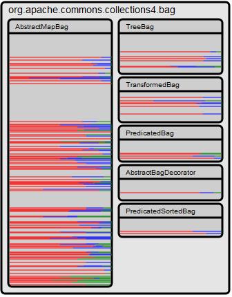
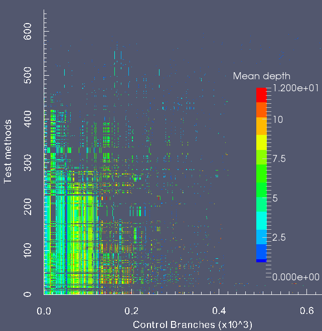

A Toolbox to explore diversity in Java applications
|

Visualization of transformations made over a package in Apache's Commons Collections.
Each color line represents a line of code. The gray lines are unstransformed lines. Color lines represents a line for wich a variant was found. Different colors represents different transformation techniques
|
Sosie Generator is a tool to generate synthetic program variations at the source code level. These variations, called sosies (from the French “looks alike”), are built to perform different computations than the original program, yet exhibit the same expected functionality.
The generator is able to create hundreds of thousands of sosies, providing a pool of synthetic variations. This reservoir of modifications can be used to switch between different computations to perform the same task. The technique has numerous applications, like allowing systems to monitor themselves by crosschecking results from same functionality sosies, reduce the predictability of a program execution or even create redundant computation for dependable systems. At this point, the Sosie Generator has been tested using nine widely used projects that provide high quality test suites. As an example, we can mention Junit, Apache Common-Lang and Easymock. The future development of the project will consist in enhance the quality and quantity of the variants created, incrementing the computational divergence and the density of the sosies population. |
|
Syringe is a lightweight library to instrument Java source code. Built on top of the Spoon open compiler, Syringe allows the user to detect most elements of the Java language using the Spoon meta-model. Custom filtering is allowed to separate the interesting elements of those who are not.
Once interesting elements are detected, a string defined by the user is injected. Using strings to inject code makes the definition of the injection much more simpler. Obviously, if the injection is executable code, the injected string may refer to a valid method call. In that case, Syringe automatically copy the classes containing the injected methods into the target project’s structure. Finally, Syringe can be extended with custom detectors and injectors classes, enabling the user with more fine-grained control. At DiverSE we have used Syringe to obtain valuable informations about all projects being sosieficated. |

A neat use of code injection to gain information regarding a project: Here we visualize how deep in the stack all execution branches lives with respect to the unit test. This may answer the question of how deep lives the sosies in comparison with the rest of the program. The data is obtained with Syringe and visualized using Paraview
|
|
TestEye Features:
• Apply and revert a particular transformation (or set of transformations) in order to evaluate the before/after behavior • Navigate through the set of transformations created by the engine • Provide enhanced coverage information • Classify transformations |
TestEye is an innovative plug-in for IntelliJ IDEA to perform and evaluate source code transformations. The plug-in allow the user to instantly see the results of the change. Multiple engines can be connected for evaluation and comparison purposes. In a posterior step, TestEye collects enhanced coverage information to understand the relation between the transformed code and the test suite.
The purpose of transforming a program can be test repair, error finding, automatic coverage and security issues, among others. While synthetic program transformation is a widely used technique in several fields in computer science, we believe we are missing methodologies and tools to evaluate our results. In many cases, transformation engines returns thousands or hundreds of alternatives. TestEye is capable of navigate and classify all this data, allowing its users to focus in particular sectors of the search space, giving the possibility to perform a “divide and conquer” approach. The primary audience of this plug-in are transformation engines developers wanting to understand the behavior of their engines without leaving the comfort of the IDE. At DiverSE team, we developed TestEye to improve the quality of our Sosie's Generator. Using TestEye we are able to observe and classify the transformations created by the generator, improving its performance. The enhanced coverage information provided by TestEye can be used as well by any developer wanting to understand the relationship between their test and their code. Therefore, our plug-in can be also exploited to gain insight of legacy code bases and big project with considerable large test suites. |